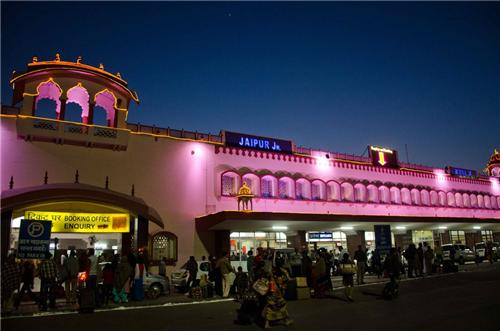
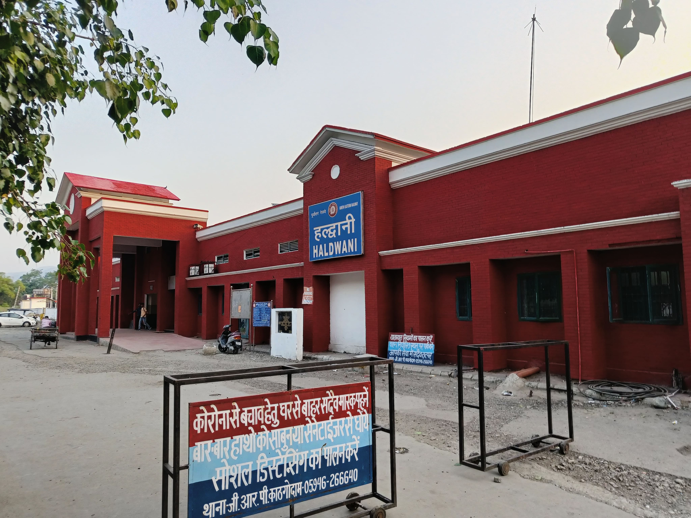
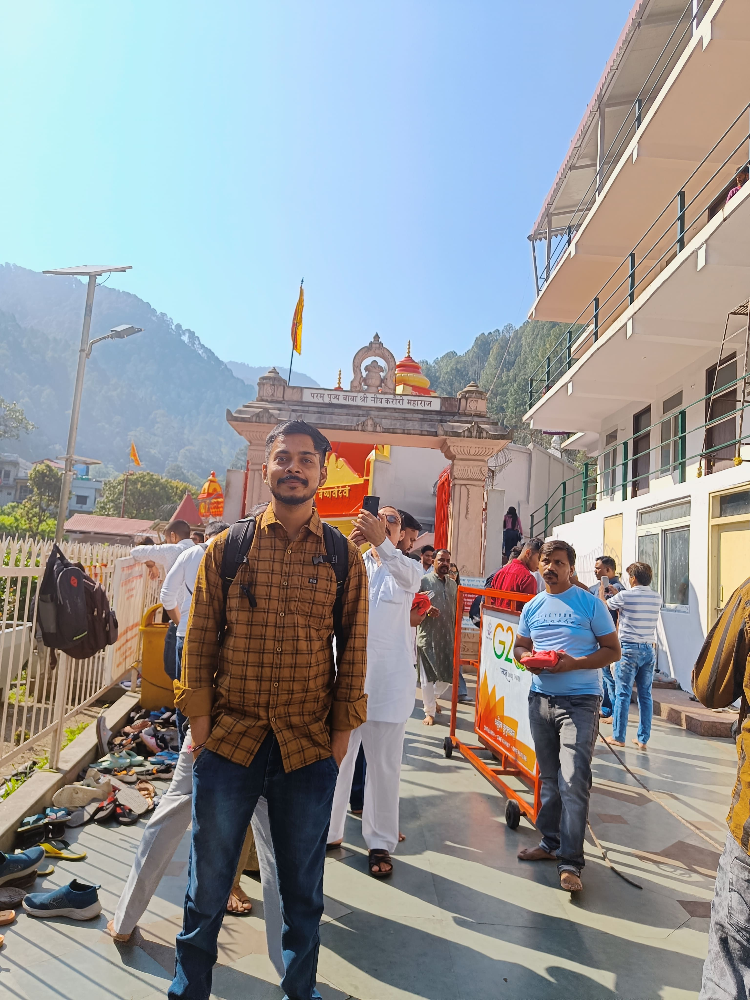
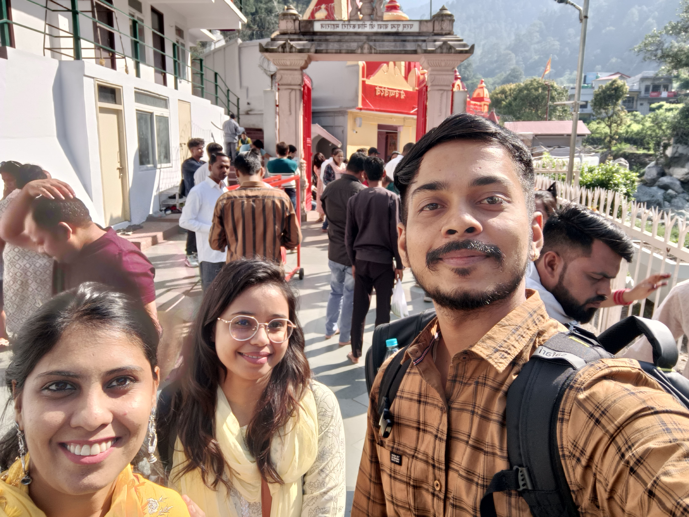
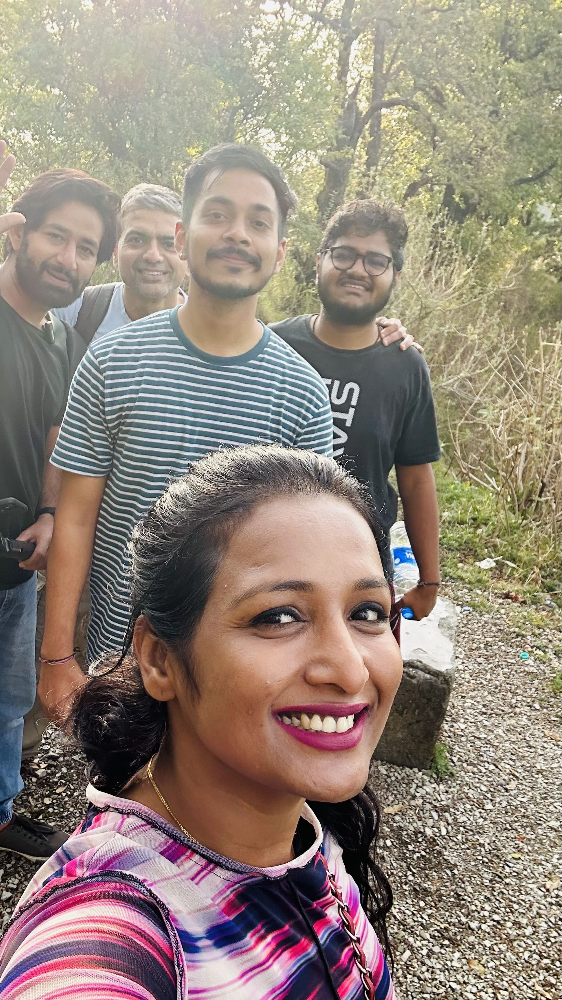
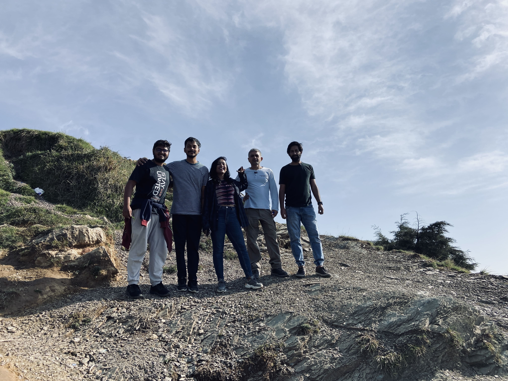
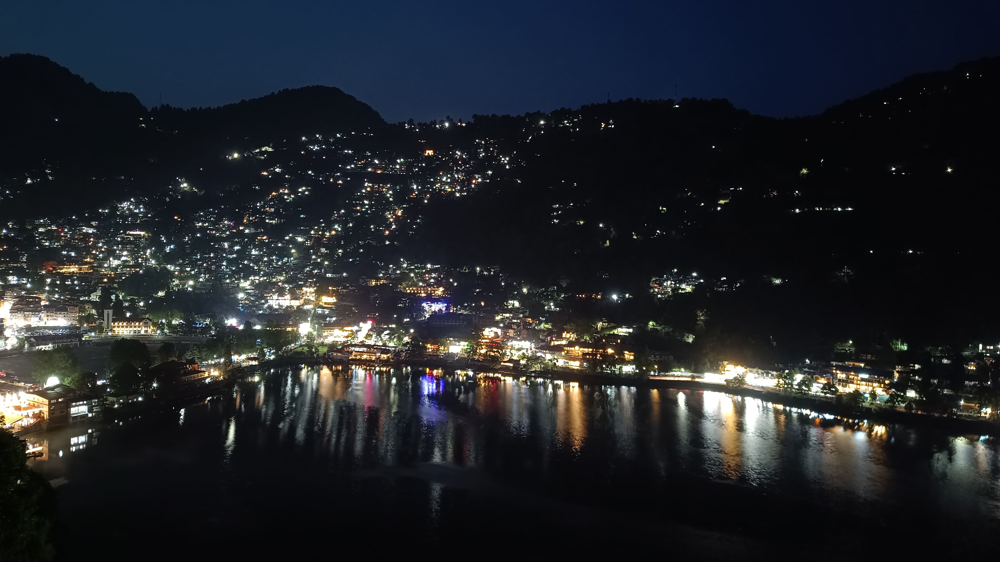

Starting from Jaipur – The Journey Begins
My Nainital adventure began on 27th December 2023, right from the heart of Rajasthan – Jaipur. With my heart full of excitement and plans to explore Nainital, Kainchi Dham, and Mukteshwar, I boarded a night train to Kathgodam via Delhi.
Fate, however, had a special twist in store for me.
Train Encounters – New Faces, New Vibes
While on the train, I met two inspiring women in the same coach. One worked in a management role at Jio, and the other had over 8 years of experience in the pharma industry. Our conversation flowed effortlessly — perhaps because I too work in the IT sector.
We clicked instantly. As we chatted, I discovered that they too were headed toward a spiritual retreat — Kainchi Dham. Without hesitation, I asked if I could join them, and they happily agreed.
Kainchi Dham – Spiritual Beginnings
We arrived at Kathgodam station around 5:00 AM and freshened up. Soon after, we arranged a shared cab to Kainchi Dham, paying ₹1500 (₹500 each). The road from Kathgodam to Kainchi Dham was mesmerizing — tall green hills, twisting valleys, and fresh mountain air filled with peace.
When we reached, we sat quietly at Neem Karoli Baba’s Ashram, soaking in the spiritual aura. That peaceful energy set the tone for the rest of the journey.
  Unplanned Plans – Heading to Nainital
Originally, the two women had no intention of staying longer — they planned to return home. But seeing my itinerary, I casually asked, “Why not explore Nainital and Mukteshwar with me?”
Surprisingly, they agreed!
We took another shared cab to Nainital for ₹1200 total. My hostel room at GoStops was already booked. They hadn’t planned to stay, but seeing the safety and comfort of the hostel, one of them decided to extend her leave and stay too. The other returned home the same day.


Exploring Nainital – Local Touch and Unexpected Joy
The next morning, we hired an Alto for ₹1500 and explored several beautiful places (Mukteshwar):
- Apple Orchards & Honey Garden
- Tea Gardens
- The iconic Golu Devta Temple with hundreds of bells
We even enjoyed authentic pahadi (local) food, which made the day more memorable. That evening, we returned to Nainital and walked around Mall Road, soaking in the winter charm.


New Bonds at the Hostel – Strangers to Friends
The next day, the woman who stayed with me also returned home. But Nainital had more people waiting to become part of this story.
At the hostel, I met Kartikeya, Preeti, and Ryan — each one vibrant and kind. Preeti worked in DXC Technologies, Kartikeya in Jio as a Data Engineer, and Ryan was a professional photographer.
Soon, our bond grew stronger — over stories, laughter, and hot chai.

The Naina Peak Trek – Adventure Calls
We decided to trek to the beautiful Naina Peak the next morning. A new friend, Avnish, also joined us. He had left his job to explore India full-time — a true wanderer.
The trek was around 6 km, and we started early to catch the sunrise from the peak. The view from the top was breathtaking — the golden light hitting the snowy peaks, the cold wind brushing our faces, and silence that spoke volumes.
At the summit, we found an Army surveillance post, where an officer offered us hot Maggie for ₹50. That simple meal, in that moment, felt like a royal feast.
Final Moments – Memories Etched Forever
As we descended through tiny mountain villages, we explored quiet corners of Nainital. We strolled along the riverside, admired the architecture near Mall Road, and captured beautiful moments in Ryan’s camera — snapshots of friendship and freedom.
After spending a couple more days enjoying the calm of Nainital, I finally said goodbye and headed back home. But the friendships, the peace, and the stories we shared remained with me.
A Journey of Serendipity and Soul
What started as a solo trip from Jaipur turned into an unforgettable adventure of chance encounters, spiritual awakenings, soulful landscapes, and lifelong connections.
If you're ever lost in life — go to the mountains. You might just find yourself.